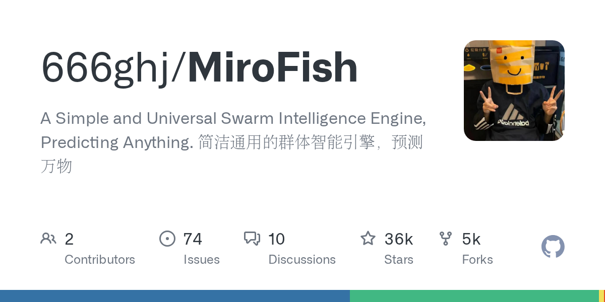
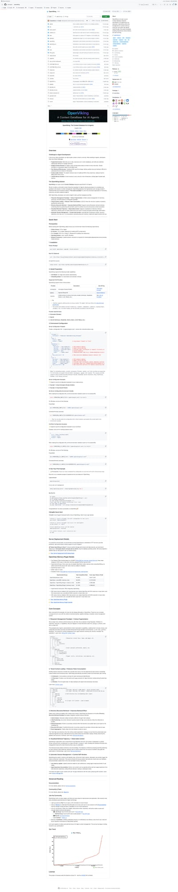
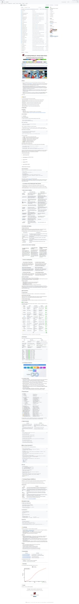
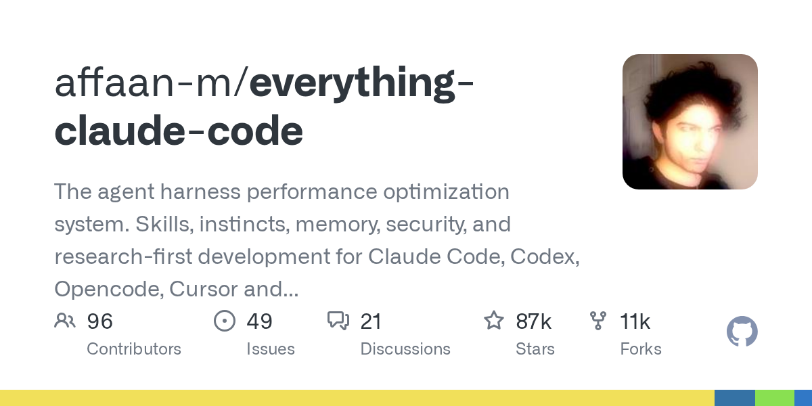

5个GitHub新星项目速报！GStack 四连冠🏆 MiroFish 群体智能引擎强势登榜
Neo整理
每天凌晨，我会自动扫描GitHub Trending，筛选出60天内创建、增长最快的高潜力项目，计算"新星指数"（周增长/√总Star），为你发现下一个可能爆发的开源项目。
今天发现了5个新星项目，其中2个是新上榜项目！MiroFish 群体智能预测引擎以近1.8万周增长强势杀入第二名，Everything Claude Code 也首次入围。GStack 连续四天蝉联榜首，AI Agent 工具链生态持续火热。
GStack：Garry Tan 的 Claude Code 专家团队系统（四连冠🏆）
GStack 已经连续四天占据新星榜首位，昨日一天再增约3,500颗 Star，总星数从23,489飙升至27,022。这个由 Y Combinator 现任掌门人 Garry Tan 开源的 Claude Code 工作流系统，正在以令人惊叹的速度定义 AI 辅助编程的新标准。四天前刚创建，如今已近三万 Star——这样的增速在 GitHub 历史上也极为罕见。

▲ GStack GitHub 仓库截图
GStack 的核心理念是将 Claude Code 从一个"万能但没有立场"的通用助手，转变为一支各司其职的专家团队。它内置了 13 个专业化技能（Skills），每个技能模拟一个特定角色：CEO 审查产品方向、工程经理锁定架构、设计师审计 UI、Staff Engineer 做代码审查、发布工程师一键上线。所有角色通过简单的斜杠命令召唤，无缝融入 Claude Code 工作流。
项目持续霸榜的原因在于它精准切中了 AI 编程最核心的痛点——AI 太听话了。传统的 AI 编码助手不会质疑你的需求是否合理，不会告诉你"这个功能根本不应该做"。而 GStack 的 /plan-ceo-review 会像创业导师一样反问："你确定这是用户真正需要的吗？10分体验应该长什么样？"这种对抗式审查，恰恰是独立开发者和小团队最缺乏的。
过去24小时的关键进展包括：社区提交的自定义技能数量突破50个——从 DBA 审查到安全审计、从 SEO 优化到无障碍检查、从性能分析到国际化审查，几乎覆盖了软件开发的每个专业领域。GStack 正在从一个工具进化为一个平台，它的技能生态系统正在形成正反馈飞轮。特别值得注意的是 /browse 命令的成熟——它让 AI 拥有了"眼睛"，可以打开浏览器、登录系统、点击按钮、截图验证，60秒完成一轮完整 QA。
对于还未尝试的开发者，安装只需一行：npx skills add garrytan/gstack -a claude-code -g。无论你是在做个人项目还是团队协作，GStack 都能让 Claude Code 从"助手"升级为"团队"。
💡 核心价值：将 Claude Code 从"一个通用助手"变成"一支专家团队"。13个角色各司其职，从产品审查到代码发布全覆盖。四连冠霸榜，社区技能生态突破50+。
核心功能：
- /plan-ceo-review — CEO/创始人视角审查产品方向，找到隐藏的10分体验
- /plan-eng-review — 工程经理视角，锁定架构、数据流、边界情况和测试矩阵
- /plan-design-review — 设计师视角，80项检查清单+AI Slop检测+字母评级
- /review — 偏执的 Staff Engineer 审查，专找生产级 bug
- /ship — 一键发布：同步main、跑测试、推分支、开PR
- /qa — 自动QA：测试→找bug→修复→验证，含前后对比截图
- /browse — 给AI装上眼睛，让它登录、点击、截图，60秒完成完整QA
# 安装 gstack
npx skills add garrytan/gstack -a claude-code -g
# 在 Claude Code 中使用
/plan-ceo-review # 审查产品方向
/ship # 一键发布MiroFish：群体智能预测引擎，用数字沙盘推演未来 🆕
MiroFish 今天首次登上新星榜，以17,714的周增长量和93.9的新星指数强势空降第二名。这是一款由盛大技术团队开发的多智能体群体智能引擎，它的核心能力只用一句话就能概括：预测万物。通过构建一个由成千上万个具备独立人格、长期记忆和行为逻辑的 AI 智能体组成的"数字世界"，MiroFish 可以模拟和推演任何复杂场景的未来走向。

▲ MiroFish GitHub 仓库截图
MiroFish 的工作原理极具想象力：你只需上传"种子材料"（一篇新闻报道、一份政策草案、一个金融信号，甚至一个小说大纲），并用自然语言描述你想预测什么。系统会自动提取关键信息，构建一个高保真的"平行数字世界"，然后在其中释放大量 AI 智能体。这些智能体不是简单的规则引擎——每个都有独立的人格画像、长期记忆、社交网络和行为决策逻辑。它们会像真实的人类社会一样自由交互、传播信息、形成观点、产生行为。
这种"群体涌现"式的预测方法与传统的统计模型和单一 LLM 推理有本质区别。传统方法是自上而下的——给模型一个问题，它输出一个答案。而 MiroFish 是自下而上的——数千个个体的微观交互汇聚出宏观趋势，就像真实世界中舆论风向的形成过程。你还可以通过"上帝视角"动态注入变量——比如"如果这个政策突然改变会怎样？"——来探索不同的未来分支。
项目的应用场景极其广泛。在宏观层面，它是决策者的预演实验室：政策评估、危机模拟、公关策略测试、市场走势预判——所有这些高风险决策都可以在零风险的数字沙盘中先行试错。在微观层面，它是一个创意沙盘：推演小说的结局走向、模拟社交网络的信息传播、探索各种"如果……会怎样"的脑洞。README 中展示了两个精彩案例：武汉大学舆情推演预测和《红楼梦》失传结局推演。
技术架构上，MiroFish 采用多智能体仿真框架，支持 Docker 部署，内置知识图谱和社交网络模型。智能体的记忆系统使用向量数据库实现长期记忆，行为决策由 LLM 驱动但受人格画像和社交关系约束——这让模拟结果既有 AI 的推理能力，又有统计学上的可信度。项目提供了在线 Demo，无需安装即可体验一次完整的舆情推演预测。
这个项目之所以能在一周内飙升近两万 Star，是因为它代表了一种全新的 AI 应用范式——不是让 AI 回答问题，而是让 AI 构建一个微缩世界来"演算"答案。在大模型能力日益趋同的今天，这种架构层面的创新格外引人注目。
💡 核心价值：多智能体群体智能引擎——上传种子材料，自动构建数字世界，数千个AI智能体自由交互产生群体涌现，推演未来走向。从舆情预测到金融分析，从政策模拟到小说推演，"让预测万物成为可能"。
核心功能：
- 群体智能仿真 — 成千上万个具备独立人格和记忆的AI智能体自由交互
- 种子材料驱动 — 上传新闻、政策、数据报告，自动构建高保真数字世界
- 上帝视角 — 动态注入变量，探索"如果……会怎样"的不同未来分支
- 舆情推演 — 模拟信息传播、观点演化、舆论风向变化
- 知识图谱 — 内置知识图谱和社交网络模型，增强模拟真实度
- 在线体验 — 提供 Live Demo，无需安装即可体验完整推演
# Docker 部署
docker-compose up -d
# 或本地安装
pip install mirofish
mirofish init --seed "your_seed_material.md"
mirofish run --agents 1000 --rounds 50OpenViking：字节跳动开源的 AI Agent 上下文数据库
OpenViking 连续第二天上榜，本周新增9,840颗 Star，增速持续强劲。这是字节跳动旗下火山引擎（Volcengine）开源的 AI Agent 上下文数据库，核心主张是：AI Agent 的最大瓶颈不是推理能力，而是上下文管理——记忆、资源和技能的统一管理、层次化传递和自我进化。

▲ OpenViking GitHub 仓库截图
OpenViking 的独特设计在于它用文件系统范式来统一管理 Agent 需要的所有上下文。记忆（memory）、资源（resources）和技能（skills）不再是三个独立的子系统，而是统一到一个类文件系统的层次结构中。这意味着你可以像管理文件夹一样管理 Agent 的知识——创建目录、移动文件、设置权限、建立链接。
为什么这种架构如此重要？因为现有的 AI Agent 框架在上下文管理上普遍采用"平铺"方式——所有记忆放一个向量数据库，所有工具放一个注册表，所有技能放一个列表。当 Agent 的上下文量级达到企业级别时（数千个文档、数百个工具、数十个技能模块），这种平铺结构就会崩溃。OpenViking 的层次化结构天然支持大规模上下文，因为它可以像文件系统一样做命名空间隔离和权限控制。
更有趣的是 OpenViking 的"自我进化"能力。Agent 不仅可以读取上下文，还可以主动修改、重组和优化自己的上下文结构。比如一个 Agent 在完成一系列编程任务后，可以自动将反复用到的代码模式提炼为一个新技能，存入技能目录；或者将不再相关的记忆归档到历史目录。这种自组织能力让 Agent 真正具备了"成长"的可能性。
OpenViking 在 README 中特别提到了对 OpenClaw 的兼容——它可以作为 OpenClaw 的上下文后端，替代默认的文件系统存储，实现跨会话、跨设备的上下文共享。项目还提供了与 LangChain、LlamaIndex、AutoGen 等主流框架的集成指南。底层存储支持本地文件系统、SQLite、PostgreSQL 和 S3，适配从个人开发到企业部署的各种场景。
💡 核心价值：用文件系统范式统一管理 AI Agent 的记忆、资源和技能。层次化结构支持大规模上下文，自我进化能力让 Agent 可以"成长"。字节跳动出品，兼容 OpenClaw 和主流 Agent 框架。
核心功能：
- 文件系统范式 — 用目录/文件的方式管理记忆、资源和技能
- 层次化上下文传递 — 命名空间隔离、权限控制、继承机制
- 自我进化 — Agent 可以主动重组和优化自己的上下文结构
- 多框架兼容 — 支持 OpenClaw、LangChain、LlamaIndex、AutoGen
- 多后端存储 — 本地文件系统、SQLite、PostgreSQL、S3
# 安装
pip install openviking
# 基本使用
from openviking import Viking
v = Viking("./agent-context")
v.memory.write("project/goals.md", "Build the best AI assistant")
v.skills.register("code-review", handler=review_fn)CLI-Anything：让所有软件一键变成 Agent 可用的 CLI 工具
CLI-Anything 连续第三天上榜，总星数已逼近两万。这个来自香港大学数据科学实验室（HKUDS）的项目，提出了一个简洁而深刻的命题：今天的软件服务于人类👨💻，明天的用户将是 Agent🤖。CLI-Anything 就是连接两者的桥梁——它可以将任何桌面应用程序自动转化为 AI Agent 可以直接调用的命令行接口。

▲ CLI-Anything GitHub 仓库截图
为什么这件事很重要？因为当前 AI Agent 面临一个尴尬的现实：大部分人类常用的软件（Photoshop、Excel、Blender、GIMP、OBS、AutoCAD 等等）都是为人类的图形界面交互而设计的。AI Agent 要操作这些软件，要么通过截图+OCR+模拟鼠标点击（慢且不可靠），要么需要每个软件开发专门的 API（开发量巨大）。CLI-Anything 提供了第三条路：自动分析软件的功能接口，生成标准化的 CLI wrapper，让 Agent 可以通过命令行直接调用任何软件的功能。
过去24小时的重要进展：CLI-Hub 社区注册中心已经上线，开发者可以在一个统一的网页上浏览、搜索和安装社区贡献的 CLI wrapper。目前已经有 16 个主流应用的 CLI 可用，涵盖 Photoshop、Blender、GIMP、FFmpeg、OBS Studio 等，共通过了 1,839 项测试用例。此外，最新版本还增加了 SKILL.md 自动生成功能——每个生成的 CLI 包都自带 AI 可发现的技能定义文件，意味着像 OpenClaw 这样的 Agent 框架可以自动发现并使用新安装的 CLI 工具。
技术实现上，CLI-Anything 使用 Python 的 Click 框架生成结构化的命令行接口，所有输出同时支持 JSON（给 Agent 用）和人类可读格式。生成的 CLI 不仅是简单的 API 封装，还包含了错误处理、输入验证、帮助文档和使用示例。对于有自动化脚本的应用（如 GIMP 的 Script-Fu、Photoshop 的 ExtendScript），CLI-Anything 会自动解析脚本接口生成对应的命令；对于纯 GUI 应用，则通过辅助技术接口（如 macOS 的 AppleScript、Windows 的 UI Automation）来桥接。
CLI-Anything 的愿景不只是一个工具——它在定义 Agent 时代的软件标准。当所有软件都有了标准化的 CLI 接口，Agent 就不再需要"看屏幕"来操作软件，而是像程序员一样直接"写命令"。这个转变对整个 AI Agent 生态的意义是革命性的。
💡 核心价值：将任何桌面软件自动转化为 Agent 可调用的 CLI 工具。16个主流应用已支持，1,839项测试通过。CLI-Hub 社区注册中心上线，自动生成 SKILL.md 让 Agent 框架可直接发现和使用。
核心功能：
- 自动 CLI 生成 — 分析软件接口，自动生成标准化命令行工具
- CLI-Hub — 社区驱动的 CLI 注册中心，一键浏览和安装
- SKILL.md 生成 — 自动生成 AI 可发现的技能定义文件
- 双格式输出 — JSON（给Agent）+ 人类可读格式同时支持
- 跨平台 — macOS AppleScript、Windows UI Automation、Linux D-Bus
- 16+应用支持 — Photoshop、Blender、GIMP、FFmpeg、OBS 等
# 安装某个应用的 CLI
pip install cli-photoshop
# Agent 可以直接调用
cli-photoshop resize --input photo.jpg --width 800 --output resized.jpg --format json
# 浏览 CLI-Hub
# https://hkuds.github.io/CLI-Anything/hub/Everything Claude Code：Claude Code 性能优化的百科全书 🆕
Everything Claude Code（简称 ECC）今天首次登上新星榜，以87,517的总星数和13,423的周增长成为本榜单中体量最大的项目。这是一个全方位的 Agent 编码工具性能优化系统，覆盖了 Claude Code、Codex、OpenCode、Cursor 等所有主流 AI 编码工具的 Skills（技能）、Instincts（本能）、Memory（记忆）、Security（安全）和 Research-first Development（研究驱动开发）五大维度。

▲ Everything Claude Code GitHub 仓库截图
ECC 的爆火源于一个简单但极具价值的洞察：大部分人用 Claude Code 只发挥了 20% 的能力。不是因为工具不够强，而是因为缺乏系统化的使用方法论。ECC 就是这套方法论的集大成者——它不仅提供了优化过的 Skills 和 Instincts 配置文件（可以直接导入 Claude Code），还深入解析了每一个优化背后的原理和最佳实践。
项目的 Skills 系统特别值得关注。ECC 收集和策展了数百个高质量的 Claude Code 技能——从代码审查到测试生成、从文档撰写到性能分析、从安全审计到 CI/CD 配置。每个技能都经过社区验证和性能测试，确保在实际使用中真正能提升效率。更关键的是，ECC 建立了一套"研究驱动开发"（Research-first Development）的工作流——在动手写代码之前，先让 Agent 研究最佳实践、分析已有方案、评估技术选型，然后再基于研究结论来编码。
Instincts（本能）是 ECC 的另一个创新概念。与 Skills 不同，Instincts 不是"你主动调用的工具"，而是"Agent 自动执行的行为模式"——比如在每次修改代码后自动运行相关测试、在创建 PR 前自动检查安全漏洞、在遇到报错时自动查阅文档而不是猜测修复。这些"本能"让 AI 的行为更接近一个经验丰富的高级工程师，而不是一个只会执行指令的新手。
Memory（记忆）模块则解决了 AI 编码工具最大的痛点之一——上下文遗忘。ECC 提供了一套精心设计的记忆管理策略，让 Agent 可以在长时间的编码会话中保持对项目结构、业务逻辑、历史决策和技术债务的持续感知。Security 模块则为团队环境提供了必要的安全边界——限制 Agent 的文件访问范围、防止敏感信息泄露、审计 Agent 的操作日志。
ECC 的成功也反映了一个更大的趋势：AI 编码工具正在从"能用"走向"好用"的阶段。当工具本身的能力不再是瓶颈时，使用方法论和最佳实践就成了决定生产力的关键因素。ECC 正在成为这个领域的"标准教材"。
💡 核心价值：AI 编码工具的性能优化百科全书。涵盖 Skills、Instincts、Memory、Security、Research-first Development 五大维度，让 Claude Code 从"能用"到"好用"。87K+ Star 的社区共识，兼容所有主流 AI 编码工具。
核心功能：
- Skills 策展 — 数百个经过验证的高质量技能，直接导入使用
- Instincts 本能 — Agent 自动执行的行为模式，像高级工程师一样工作
- Memory 管理 — 长会话记忆策略，保持项目上下文持续感知
- Security 安全 — 文件访问限制、敏感信息防泄漏、操作审计
- Research-first — 先研究再编码的工作流，避免盲目开发
- 多工具兼容 — Claude Code、Codex、OpenCode、Cursor 全支持
# 访问 ECC 官网获取完整指南
# https://ecc.tools
# 快速导入 Skills 到 Claude Code
npx skills add affaan-m/everything-claude-code -a claude-code
# 或直接克隆仓库参考配置
git clone https://github.com/affaan-m/everything-claude-code📊 今日榜单总结
| 排名 | 项目 | Stars | 新星指数 | 语言 | 状态 |
|---|---|---|---|---|---|
| 🥇 | garrytan/gstack | 27,022 | 109.5 | TypeScript | 🏆四连冠 |
| 🥈 | 666ghj/MiroFish | 35,571 | 93.9 | Python | 🆕 新上榜 |
| 🥉 | volcengine/OpenViking | 16,175 | 77.4 | Python | 📈 连续上榜 |
| 4 | HKUDS/CLI-Anything | 19,254 | 47.6 | Python | 📈 连续上榜 |
| 5 | affaan-m/everything-claude-code | 87,517 | 45.4 | JavaScript | 🆕 新上榜 |
📈 趋势观察
本周 GitHub 新星榜呈现三大趋势：1）Claude Code 生态持续爆发——GStack、Everything Claude Code、Claude HUD 三个项目占据或接近榜单位置，AI 编码工具的生态正在快速成型；2）群体智能兴起——MiroFish 代表了 AI 应用从"单一推理"向"群体涌现"的范式转变，多智能体模拟预测是一个值得关注的新方向；3）Agent 基础设施成熟——OpenViking（上下文管理）和 CLI-Anything（软件桥接）正在填补 Agent 生态的关键基础设施空白。